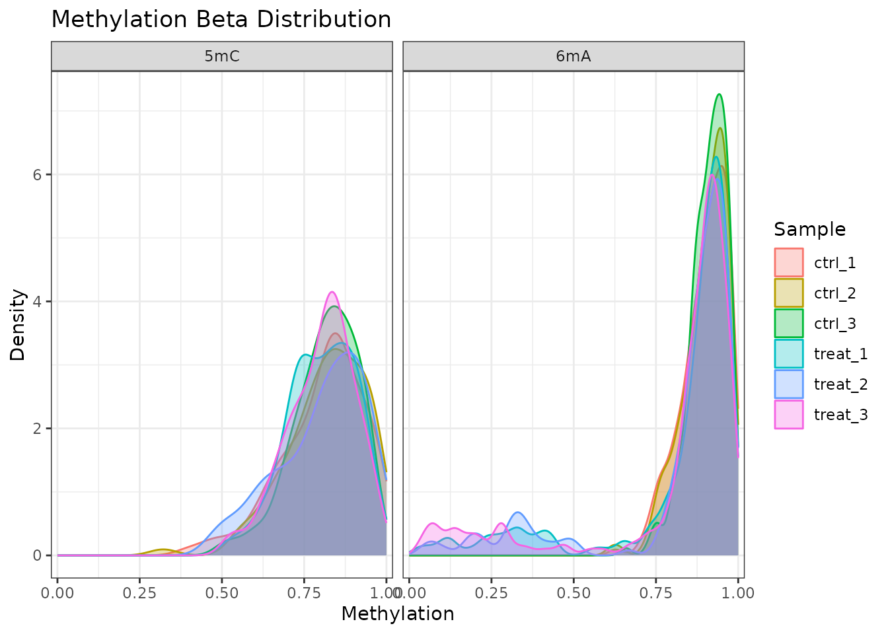
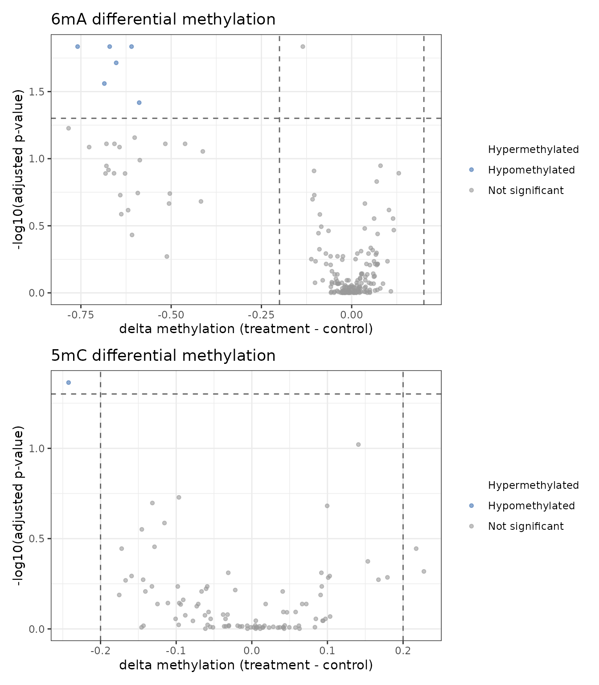
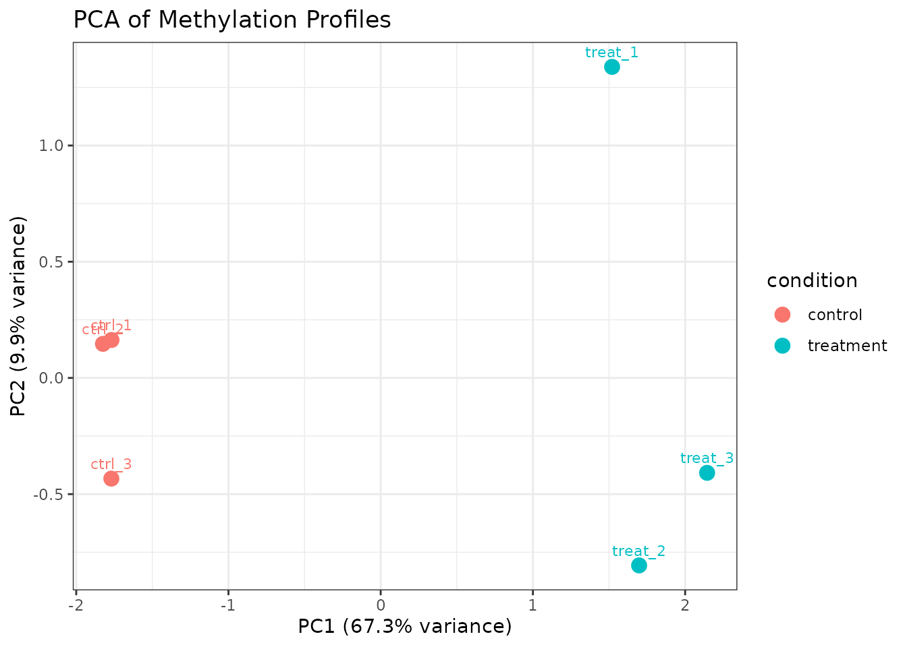
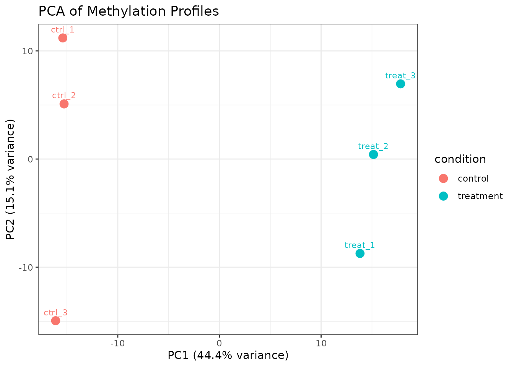
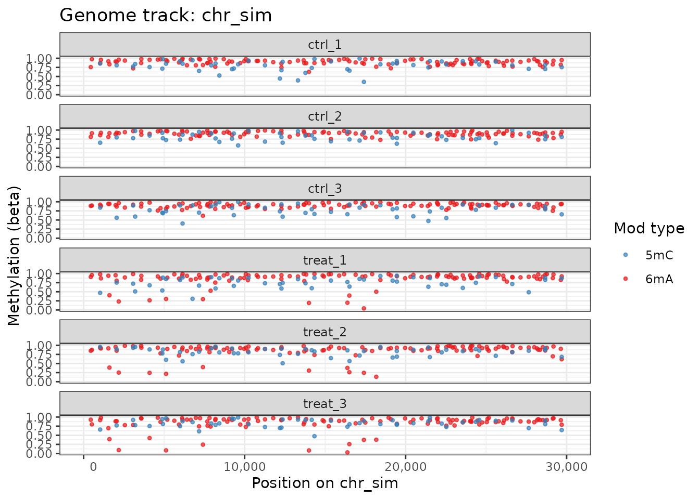
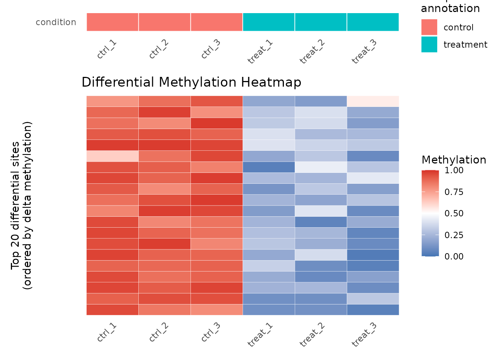

Working with Multiple Modification Types
Source:vignettes/multiple-modification-types.Rmd
multiple-modification-types.RmdIntroduction
Bacterial genomes frequently carry multiple simultaneous DNA methylation marks:
- 6mA (N6-methyladenine) — deposited by Dam methyltransferase at GATC motifs; functions in mismatch repair and cell-cycle regulation.
- 5mC (5-methylcytosine) — deposited by Dcm methyltransferase at CCWGG motifs; roles in gene regulation are less well characterized in bacteria.
- 4mC (N4-methylcytosine) — deposited by restriction-modification systems at various sequence motifs; protects against foreign DNA.
comma stores all modification types in a single
commaData object, enabling joint analysis, comparison, and
visualization across modification types.
This vignette demonstrates multi-modification workflows using the
built-in comma_example_data dataset, which contains both
6mA and 5mC sites.
Exploring Multiple Modification Types
What modifications are present?
modTypes(comma_example_data)
#> [1] "5mC" "6mA"Per-modification methylation summary
methylomeSummary() reports stats per sample. Combine it
with mod_type filtering to compare distributions:
methylomeSummary(comma_example_data, mod_type = "6mA")[,
c("sample_name", "condition", "mean_beta", "median_beta", "n_covered")]
#> sample_name condition mean_beta median_beta n_covered
#> 1 ctrl_1 control 0.9036813 0.9173248 393
#> 2 ctrl_2 control 0.9029957 0.9139209 393
#> 3 ctrl_3 control 0.9014299 0.9133574 393
#> 4 treat_1 treatment 0.8557059 0.9107859 393
#> 5 treat_2 treatment 0.8491166 0.9039562 393
#> 6 treat_3 treatment 0.8527682 0.9074161 393
methylomeSummary(comma_example_data, mod_type = "5mC")[,
c("sample_name", "condition", "mean_beta", "median_beta", "n_covered")]
#> sample_name condition mean_beta median_beta n_covered
#> 1 ctrl_1 control 0.7885015 0.8101719 195
#> 2 ctrl_2 control 0.8052173 0.8270815 195
#> 3 ctrl_3 control 0.7879713 0.8214410 195
#> 4 treat_1 treatment 0.7956813 0.8264400 195
#> 5 treat_2 treatment 0.8122951 0.8483001 195
#> 6 treat_3 treatment 0.8107686 0.8296301 195Distribution Comparison Across Modification Types
plot_methylation_distribution() automatically facets by
modification type when multiple types are present:
plot_methylation_distribution(comma_example_data, per_sample = TRUE)
Beta value density per sample, faceted by modification type.
6mA sites in bacteria commonly show a bimodal distribution (near 0 or near 1) because restriction-modification systems methylate recognition sequences with high efficiency. 5mC patterns can be more variable.
Subsetting by Modification Type
Use subset() to extract a single modification type:
only_6ma <- subset(comma_example_data, mod_type = "6mA")
only_5mc <- subset(comma_example_data, mod_type = "5mC")
cat("6mA sites:", nrow(methylation(only_6ma)), "\n")
#> 6mA sites: 393
cat("5mC sites:", nrow(methylation(only_5mc)), "\n")
#> 5mC sites: 195Differential Methylation: Testing Each Modification Type
Test all types in one call
By default, diffMethyl() tests all modification types
present in the object. Use results(..., mod_type = "6mA")
to extract type-specific results:
dm_all <- diffMethyl(comma_example_data, formula = ~ condition)
res_6ma <- results(dm_all, mod_type = "6mA")
res_5mc <- results(dm_all, mod_type = "5mC")
cat("6mA: significant sites (padj < 0.05, |Δβ| ≥ 0.2):",
sum(!is.na(res_6ma$dm_padj) & res_6ma$dm_padj < 0.05 &
abs(res_6ma$dm_delta_beta) >= 0.2, na.rm = TRUE), "\n")
#> 6mA: significant sites (padj < 0.05, |Δβ| ≥ 0.2): 31
cat("5mC: significant sites (padj < 0.05, |Δβ| ≥ 0.2):",
sum(!is.na(res_5mc$dm_padj) & res_5mc$dm_padj < 0.05 &
abs(res_5mc$dm_delta_beta) >= 0.2, na.rm = TRUE), "\n")
#> 5mC: significant sites (padj < 0.05, |Δβ| ≥ 0.2): 11Volcano plots per modification type
p_6ma <- plot_volcano(res_6ma) +
ggplot2::ggtitle("6mA differential methylation")
p_5mc <- plot_volcano(res_5mc) +
ggplot2::ggtitle("5mC differential methylation")
# Arrange side by side if patchwork is available
if (requireNamespace("patchwork", quietly = TRUE)) {
patchwork::wrap_plots(p_6ma, p_5mc, ncol = 1L)
} else {
print(p_6ma)
print(p_5mc)
}
6mA differential methylation (top) and 5mC (bottom).
PCA Across Modification Types
plot_pca() converts beta values to M-values via
mValues() before PCA, which stabilizes variance for sites
near 0 or 1. By default all sites are used; pass mod_type
to restrict to one modification type:
plot_pca(comma_example_data, color_by = "condition")
PCA using all modification types.
plot_pca(comma_example_data, mod_type = "6mA", color_by = "condition")
PCA using 6mA sites only.
Use return_data = TRUE to retrieve the PC scores for
custom plots or downstream analysis:
pca_df <- plot_pca(comma_example_data, mod_type = "6mA", return_data = TRUE)
# data.frame with PC1, PC2, sample_name, condition, replicate, ...
head(pca_df[, c("sample_name", "condition", "PC1", "PC2")])
#> sample_name condition PC1 PC2
#> 1 ctrl_1 control -15.40587 11.1961851
#> 2 ctrl_2 control -15.28274 5.0977438
#> 3 ctrl_3 control -16.11112 -14.9438670
#> 4 treat_1 treatment 13.82789 -8.7254793
#> 5 treat_2 treatment 15.15304 0.4254472
#> 6 treat_3 treatment 17.81880 6.9499703
attr(pca_df, "percentVar")
#> PC1 PC2
#> 44.4 15.1Genome Track with Both Modification Types
When mod_type = NULL, plot_genome_track()
displays sites from all modification types, using different colors to
distinguish them:
plot_genome_track(comma_example_data, chromosome = "chr_sim",
start = 1L, end = 30000L, annotation = FALSE)
Genome track showing 6mA (red) and 5mC (blue) sites.
Heatmaps per Modification Type
Filter the results() output to a single modification
type before passing it to plot_heatmap():
plot_heatmap(res_6ma, dm_all, n_sites = 20L)
Heatmap of top 20 differentially methylated 6mA sites.
Session Information
sessionInfo()
#> R version 4.5.3 (2026-03-11)
#> Platform: x86_64-pc-linux-gnu
#> Running under: Ubuntu 24.04.4 LTS
#>
#> Matrix products: default
#> BLAS: /usr/lib/x86_64-linux-gnu/openblas-pthread/libblas.so.3
#> LAPACK: /usr/lib/x86_64-linux-gnu/openblas-pthread/libopenblasp-r0.3.26.so; LAPACK version 3.12.0
#>
#> locale:
#> [1] LC_CTYPE=C.UTF-8 LC_NUMERIC=C LC_TIME=C.UTF-8
#> [4] LC_COLLATE=C.UTF-8 LC_MONETARY=C.UTF-8 LC_MESSAGES=C.UTF-8
#> [7] LC_PAPER=C.UTF-8 LC_NAME=C LC_ADDRESS=C
#> [10] LC_TELEPHONE=C LC_MEASUREMENT=C.UTF-8 LC_IDENTIFICATION=C
#>
#> time zone: UTC
#> tzcode source: system (glibc)
#>
#> attached base packages:
#> [1] stats graphics grDevices datasets utils methods base
#>
#> other attached packages:
#> [1] comma_0.7.2.9000 BiocStyle_2.38.0
#>
#> loaded via a namespace (and not attached):
#> [1] bitops_1.0-9 rlang_1.1.7
#> [3] magrittr_2.0.5 matrixStats_1.5.0
#> [5] compiler_4.5.3 mgcv_1.9-4
#> [7] systemfonts_1.3.2 vctrs_0.7.2
#> [9] reshape2_1.4.5 stringr_1.6.0
#> [11] pkgconfig_2.0.3 crayon_1.5.3
#> [13] fastmap_1.2.0 XVector_0.50.0
#> [15] labeling_0.4.3 Rsamtools_2.26.0
#> [17] rmarkdown_2.31 UCSC.utils_1.6.1
#> [19] ragg_1.5.2 xfun_0.57
#> [21] cachem_1.1.0 cigarillo_1.0.0
#> [23] GenomeInfoDb_1.46.2 jsonlite_2.0.0
#> [25] DelayedArray_0.36.1 BiocParallel_1.44.0
#> [27] parallel_4.5.3 R6_2.6.1
#> [29] bslib_0.10.0 stringi_1.8.7
#> [31] RColorBrewer_1.1-3 limma_3.66.0
#> [33] rtracklayer_1.70.1 GenomicRanges_1.62.1
#> [35] jquerylib_0.1.4 numDeriv_2016.8-1.1
#> [37] Rcpp_1.1.1 Seqinfo_1.0.0
#> [39] bookdown_0.46 SummarizedExperiment_1.40.0
#> [41] knitr_1.51 zoo_1.8-15
#> [43] R.utils_2.13.0 IRanges_2.44.0
#> [45] Matrix_1.7-4 splines_4.5.3
#> [47] tidyselect_1.2.1 qvalue_2.42.0
#> [49] abind_1.4-8 yaml_2.3.12
#> [51] codetools_0.2-20 curl_7.0.0
#> [53] lattice_0.22-9 tibble_3.3.1
#> [55] plyr_1.8.9 Biobase_2.70.0
#> [57] withr_3.0.2 S7_0.2.1
#> [59] coda_0.19-4.1 evaluate_1.0.5
#> [61] desc_1.4.3 mclust_6.1.2
#> [63] Biostrings_2.78.0 pillar_1.11.1
#> [65] BiocManager_1.30.27 MatrixGenerics_1.22.0
#> [67] renv_1.1.8 stats4_4.5.3
#> [69] generics_0.1.4 RCurl_1.98-1.18
#> [71] emdbook_1.3.14 S4Vectors_0.48.1
#> [73] ggplot2_4.0.2 scales_1.4.0
#> [75] gtools_3.9.5 glue_1.8.0
#> [77] tools_4.5.3 BiocIO_1.20.0
#> [79] data.table_1.18.2.1 GenomicAlignments_1.46.0
#> [81] fs_2.0.1 mvtnorm_1.3-6
#> [83] XML_3.99-0.23 grid_4.5.3
#> [85] bbmle_1.0.25.1 bdsmatrix_1.3-7
#> [87] patchwork_1.3.2 nlme_3.1-168
#> [89] restfulr_0.0.16 cli_3.6.5
#> [91] textshaping_1.0.5 fastseg_1.56.0
#> [93] S4Arrays_1.10.1 methylKit_1.36.0
#> [95] dplyr_1.2.1 gtable_0.3.6
#> [97] R.methodsS3_1.8.2 sass_0.4.10
#> [99] digest_0.6.39 BiocGenerics_0.56.0
#> [101] SparseArray_1.10.10 rjson_0.2.23
#> [103] htmlwidgets_1.6.4 farver_2.1.2
#> [105] htmltools_0.5.9 pkgdown_2.2.0
#> [107] R.oo_1.27.1 lifecycle_1.0.5
#> [109] httr_1.4.8 statmod_1.5.1
#> [111] MASS_7.3-65